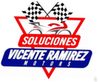
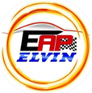
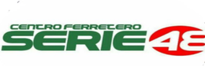
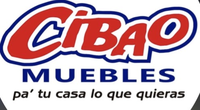
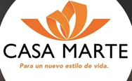
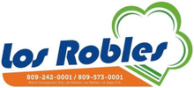
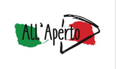

Cifras que resisten
Estados financieros que soportan la pregunta del analista, del comité y del banco.
Treinta años cuidando los números con los que empresas dominicanas como la tuya deciden, invierten y crecen.
Nuestros servicios inician en 1994 con contabilidad por igualas, auditorías financieras y asesoría administrativa. Hoy el alcance es mayor y el compromiso es el mismo: información oportuna, verificable y útil para decidir.
Estados financieros que soportan la pregunta del analista, del comité y del banco.
Auditoría con papeles de trabajo, evidencia y trazabilidad de cada partida.
Consultoría que traduce la contabilidad en un plan con números detrás.
El registro al día y conciliado, mes a mes, con la cuenta cuadrada antes de que la necesites.
Barrido partida por partida. Cada cifra queda amarrada a su evidencia.
El calendario de la DGII y la TSS corriendo a tiempo, sin recargos y sin sobresaltos.
Del dato al plan: proyecciones, estructura de costos y la decisión sustentada.
La nómina, el expediente y el cumplimiento laboral funcionando como un solo sistema.
Formación para que el equipo del cliente sostenga el estándar por su cuenta.
Conviene decir con franqueza dónde está parada la empresa dominicana promedio y en qué contexto tiene que administrarse. Todos los datos que siguen provienen de fuentes públicas verificables, citadas al pie.
Más del 81% de las MIPYMES con local fijo no cuenta con contabilidad ni con RNC; en unidades móviles y agropecuarias la cifra pasa del 90%. Ese es el punto de partida de casi todos nuestros clientes cuando llegan. No es un defecto de carácter del empresario dominicano: es que nadie le montó nunca la estructura.
Al mismo tiempo que la empresa necesita ordenarse, el calendario de obligaciones se volvió más denso y más exigente en tiempo. El resultado práctico es que la atención de todos termina puesta en la fecha límite más próxima, y no en la información que hace falta para dirigir.
En 2026 la DGII recibió más de 2,000 millones de comprobantes fiscales electrónicos, con más de 80,000 emisores autorizados y el 72% de los comprobantes del semestre ya en formato electrónico.
Es la fecha límite para micro y pequeños contribuyentes conforme a la Ley 32-23 y el Aviso 06-26. Ese segmento concentra el 98.7% del universo MIPYME del país.
La DGII exige el dictamen de estados financieros en presentación física, en rectificativa o cuando lo requiere, según su respuesta oficial CA149. Para la mayoría de las empresas eso significa pasar el año entero sin que nadie revise sus cifras.
Lo que la firma hace desde hace años tiene nombre propio en la profesión: Client Advisory Services, o servicios de CFO externo. Es contabilidad, sí, pero auditada mes a mes, convertida en indicadores y discutida con la gerencia antes de que el mes siguiente empiece a correr.
No es una moda marginal ni una categoría que estemos improvisando: es la línea de mayor crecimiento de la profesión a nivel internacional, y es la que decidimos desarrollar a fondo para el empresario dominicano.
En República Dominicana todavía son muy pocas las firmas que llevan la contabilidad financiera a esta profundidad. La mayoría del mercado sigue organizada alrededor del cumplimiento y del trámite.
Fuentes. Banco Central y MICM, ENMIPYMES 2022-2023 · Oficina Nacional de Estadística, Boletín Panorama Estadístico 88 sobre ENHOGAR-2013 · Banco Mundial, Enterprise Surveys República Dominicana 2025 · DGII, comunicaciones oficiales y respuesta CA149 de su Comunidad de Ayuda · Ley 32-23 y Aviso 06-26 · AICPA y CPA.com, CAS Benchmark Survey 2024 · Accounting Today, marzo 2026.
Años de ejercicio
Clientes activos
Profesionales
Asesores
Comprendemos la empresa, su modelo de negocio, sus operaciones, sus sistemas y su gente. Antes de proponer nada.
Identificamos situación actual, riesgos y oportunidades, con hallazgos documentados y clasificados por severidad.
Definimos procesos, catálogo de cuentas, políticas, controles, formularios y responsabilidades.
Acompañamos la puesta en funcionamiento, con capacitación al personal y pruebas antes de operar en firme.
Establecemos seguimiento, conciliación, auditoría de escritorio e indicadores que sostienen el orden alcanzado.
Evaluamos resultados, medimos desviaciones y ajustamos. La estructura de un cliente en el mes 24 no es la del mes 1.
Las tres primeras etapas montan la estructura. Las tres últimas se repiten cada mes mientras dure la relación. Ese es el punto: la firma no entra, entrega un informe y se va.
Cada mes un auditor de escritorio revisa el trabajo del registro. Son personas distintas y responsabilidades distintas. Es lo que separa una contabilidad procesada de una contabilidad auditada, y es poco frecuente encontrarlo dentro de una iguala mensual.
Si no hay certeza suficiente sobre una cifra, se marca y se consulta. No se completa por lógica ni por costumbre.
Reglas, umbrales y errores conocidos documentados como protocolo de la firma. No dependen de la memoria de quien los ejecuta.
El hallazgo llega con el asiento completo y la corrección propuesta, no como una observación general.
La información se entrega mientras todavía sirve para decidir sobre el mes en curso. Un informe que llega tarde no sirve para decidir: sirve para lamentarse.
El informe se presenta y se discute con la gerencia. Sin esa reunión el trabajo queda a medias.
Por honestidad comercial, también conviene decir qué no ofrece este modelo.
Cada línea funciona por sí sola y todas encajan entre sí. Abajo está el detalle de qué hacemos, en qué orden y qué queda de cada paso. Abra la que le interese.
Lo que sostiene esta línea no es el registro, es la revisión. Cada mes los auditores de la firma no se limitan a recibir lo que el cliente registró: lo validan contra el documento físico y contra el sistema antes de que las cifras lleguen a un estado financiero.
Cuestionario, entrevistas y observación directa en el sitio. Cada área se documenta con situación actual, fortalezas, riesgos y recomendaciones, y los hallazgos se clasifican por severidad.
Se concilia caja y bancos, se depuran cuentas por cobrar y por pagar, se levanta el inventario físico, se identifican los pasivos reales y se determina el patrimonio efectivo.
No es una plantilla. Una constructora necesita contabilidad por obra; una cadena de tiendas, prorrateo por local; una clínica, separar servicios y almacenes.
Políticas contables bajo NIIF para PYMES, segregación de funciones, parametrización, carga de saldos de apertura, pruebas funcionales y capacitación de los usuarios designados.
Facturas, NCF, estados bancarios, nómina, conduces y reportes del sistema, ordenados antes de tocar un asiento.
Se registran las operaciones del mes, o se revisa el registro hecho por el personal del cliente.
Compras, cheques y transferencias, depósitos, nómina, inventario, cuentas por cobrar y por pagar. Documento físico contra sistema, asiento por asiento.
Cada cuenta, con identificación de tránsitos y de partidas en banco no registradas y viceversa. Cuadrando a cero.
Cuenta por cuenta contra el estado de resultados, los anexos y el estado de situación financiera.
Activos igual a pasivos más patrimonio. Al centavo.
Cada excepción llega con su asiento completo y la corrección propuesta, no como una observación general.
Se prepara el informe financiero del mes y se presenta a la gerencia. El informe sin esa conversación es papel.
Trabajamos con papeles de trabajo, evidencia y trazabilidad de cada partida. El principio que sostiene la línea es simple: quien registra no es quien audita. Son personas distintas y responsabilidades distintas, y por eso un error se detecta en el mes y no un año después.
Alcance, ciclos y calendario definidos según el riesgo real de cada área, no según la costumbre.
Cada mes, documento físico contra registro y contra sistema. Quien registra no es quien audita: son personas y responsabilidades distintas.
Conteo físico contra sistema, transferencias entre almacenes contra recepciones, sobrantes y faltantes, método de valuación.
Se mide la exposición ante la DGII antes de que exista un requerimiento, no después.
Cada excepción se documenta con el asiento completo, la corrección propuesta, su severidad y su lugar en la matriz de riesgo.
Los papeles de trabajo se convierten en recomendaciones que alguien puede ejecutar, con responsable y plazo.
Cada asiento contra el reporte de compras y las facturas. Cuenta de débito estándar por suplidor, ITBIS al 18% y su derecho a crédito, NCF válidos y no duplicados, informales sin comprobante, activos registrados como gasto, gastos personales del propietario y proveedores cruzados.
Amarre del 606 contra la contabilidad: cuenta de compras, ITBIS adelantado, retenciones y saldo del suplidor. Consistencia de la clasificación entre meses.
Cuadre débito contra crédito y contra el total impreso. Asiento normal suplidor contra banco. Detecta cargos a cuentas personales del socio, nómina no registrada, donaciones, préstamos y cheques anulados que quedaron vivos.
Banco al débito, caja al crédito, comisión de tarjeta y retención de ITBIS de la Norma 08-04 al débito. Detecta pasivos en el crédito, asientos descuadrados, cuentas puente y contradicciones entre concepto y registro.
Estado bancario contra contabilidad contra tránsitos del mes anterior. Partidas en banco no registradas, registros sin reflejo en banco, cuadre a cero.
Balanza contra antigüedad de saldos, suplidor por suplidor. Clasifica en igual, diferente, solo en balanza y solo en antigüedad, y comprueba que la suma de diferencias iguale el total.
Antigüedad, gestión de cobranza, cuentas por cobrar a empleados y cruce con el auxiliar.
Conteo físico contra sistema, transferencias entre almacenes o tiendas contra recepciones y contra el registro contable, sobrantes y faltantes, valuación.
Planillas, novedades, licencias, horas extras, vacaciones, regalía y prestaciones. Amarre TSS contra contabilidad, SIRLA, DGT-2, DGT-3, DGT-4, IR-3 e IR-13.
Comparación de los últimos tres meses por cuenta control y auxiliar. Gastos faltantes, aumentos y disminuciones de 15% o más, registros con tipo de documento incorrecto.
Cuenta por cuenta: anexos, estado de resultados y estado de situación contra la balanza. Reclasificaciones, valores mal mapeados y descuadres, con cuadre al 100%.
Distribución multinivel entre sucursales y líneas de negocio, con validación de cuadres al centavo.
Piso, punto medio y meta con margen objetivo por tienda o punto de venta, con evolución contra el mes anterior.
Ciclos de revisión sobre el entregable hasta cero errores: cifras, ortografía y tildes, totales, formato y coherencia lógica.
Cada uno de estos procedimientos está documentado como un protocolo escrito de la firma, con sus reglas, sus umbrales y sus errores conocidos. No dependen de la memoria del auditor que lo ejecuta: por eso el mismo estándar se aplica en una ferretería de La Vega y en una clínica de Barahona.
No concebimos la contabilidad fiscal como un proceso aparte. Una declaración confiable se sustenta en una contabilidad organizada y en documentación verificable, así que antes de preparar cualquier obligación validamos la información contra los registros y los documentos que la respaldan.
Perfil tributario, obligaciones vigentes, provisiones y observaciones previas de la DGII.
Archivo ordenado de declaraciones y soportes, de modo que cada cifra declarada tenga su respaldo localizable.
Validez de los NCF, duplicidades, informales sin comprobante y avance real en facturación electrónica.
Formatos 606 y 607 amarrados a la contabilidad: compras, ITBIS adelantado, retenciones y saldo del suplidor.
IT-1, IR-3, IR-17, IR-2 y retenciones de ISR e ITBIS, en calendario y con seguimiento de fechas.
Respuesta a la DGII con la documentación ya ordenada, no armada a última hora.
Aquí la contabilidad deja de ser registro y pasa a ser argumento: lo que sostiene una decisión de compra, de inversión o de financiamiento. Y cuando la empresa necesita rumbo y no solo cifras, el mismo método se aplica a la planificación estratégica.
Una vez que existe información organizada se fija la línea base y se mide contra ella. Antes de eso, cualquier meta es decorativa.
Costo real contra presupuestado, estructura porcentual y rentabilidad por línea, obra, tienda o unidad de negocio.
Piso, punto medio y meta con margen objetivo por punto de venta, con evolución contra el mes anterior.
Capital de trabajo, evaluación de inversiones y proyección del efectivo con los supuestos a la vista.
Cruzados contra Central de Riesgo, IR-2 y movimientos bancarios. Blindar significa dejarlos exactos y soportados, no falsearlos.
Se anticipan las preguntas del analista y se responden los cuestionarios del comité de crédito con la evidencia en la mano.
Definición o revisión de misión, visión, valores y principios, con el propietario en la mesa.
FODA, análisis del entorno, evaluación interna, riesgos y factores críticos de éxito.
La visión se traduce en objetivos que se pueden verificar, no en declaraciones de intención.
Cada objetivo baja a iniciativa, actividad, responsable, fecha, indicador y meta.
KPI que permiten evaluar el avance sin discusión sobre si se cumplió o no.
Revisión periódica para medir resultados, detectar desviaciones y corregir mientras hay tiempo.
Lo que buscamos es que exista correspondencia entre cuatro fuentes que en la mayoría de las empresas no se hablan entre sí. Cuando una nómina se registra mal se nota en la TSS, en el estado de resultados y en el indicador de costo de personal: si las capas están conectadas, el error se detecta en el mes; si no, aparece un año después.
Estructura, organigrama, perfiles de puesto y manual de organización, alineados con los objetivos de la empresa.
Formularios, controles, acciones de personal y documentación laboral, escritos y en uso.
Archivo físico y digital completo: contratos, ingresos, movimientos, permisos, vacaciones, amonestaciones y terminaciones.
Planillas, novedades, licencias, horas extras, vacaciones, regalía y prestaciones, con validación técnica de los cálculos e informe mensual de observaciones.
Registro de novedades, DGT-2, DGT-3, DGT-4 y DGT-5, conciliados contra la nómina y contra el estado de resultados.
Objetivos e indicadores por puesto, evaluaciones, retroalimentación estructurada y planes de desarrollo.
La metodología no se queda en conceptos. Los programas incorporan casos prácticos, ejercicios, plantillas, herramientas de trabajo, evaluaciones y aplicación a situaciones reales de la empresa.
Se identifica qué le falta al equipo del cliente para sostener por sí mismo lo que se implementó.
Contenido, alcance, modalidad y duración, armados a la medida de la empresa y no de un catálogo genérico.
Casos prácticos, ejercicios, plantillas y herramientas aplicadas a situaciones reales de la empresa.
Talleres presenciales, capacitación virtual, seminarios, cursos especializados y entrenamientos in company.
Evaluaciones y seguimiento, para saber quién quedó en condiciones de ejecutar y quién necesita refuerzo.
El programa cierra cuando lo aprendido se aplica en la operación y el efecto se ve en los números.
Nuestros servicios inician en el año 1994, ante la necesidad de proveer a las empresas de herramientas confiables y oportunas, mediante la modalidad de contabilidad por igualas, auditorías financieras y asesoría administrativa.
En la actualidad, afianzamos nuestro compromiso con servicios innovadores que fortalezcan y optimicen los recursos empresariales, enfocados a resultados planificados y sostenibles.
Años de ejercicio
Clientes activos
Profesionales
Asesores
Proveer a nuestros clientes de herramientas e informaciones oportunas, para la planificación y desarrollo de las estrategias necesarias que les permitan alcanzar sus objetivos y optimizar sus recursos e inversiones.
Ser una firma de contadores, auditores y consultores empresariales apegados a las normas de ética profesional, enfocados en crear una cultura de calidad y confiabilidad en nuestros servicios.

Socio Ejecutivo — Coordinador División Servicios Financieros

Socia Ejecutiva — Coordinadora Planificación Estratégica y RRHH
La dirección técnica del trabajo mensual. Cada uno responde por una parte distinta del servicio: lo fiscal, la operación y el análisis financiero.
Socio Director de Gestión Fiscal Empresarial
Contador Público Autorizado (CPA)
Conduce el cumplimiento tributario de toda la cartera: conciliación contable-fiscal, revisión de comprobantes y e-CF, planificación del cierre anual y defensa técnica ante la DGII.
Gerente de Operaciones
Auditor financiero
Coordina la ejecución mensual del servicio: asignación de los equipos, cumplimiento de los protocolos de auditoría y entrega en fecha de cada informe.
Gerente Financiero — Análisis e Informes de Gestión
Contador Público Autorizado (CPA)
Dirige el análisis financiero y la preparación de los informes mensuales que se discuten con la gerencia, y la consultoría financiera para banca, inversión y decisiones de crecimiento.
Diecisiete profesionales entre auditores, analistas y asesores especializados en sistemas informáticos, planificación, recursos humanos y proyectos de inversión pública.
Treinta y dos empresas e instituciones, agrupadas por su actividad económica.
El catálogo de cuentas se diseña según el giro: una constructora necesita contabilidad por obra, una cadena de tiendas necesita prorrateo de gastos compartidos por local y una clínica necesita separar servicios y almacenes. Por eso el mismo protocolo produce resultados distintos en cada sector.







Av. García Godoy Esq. Sánchez
Edif. Emmanuel (1er. nivel)
La Vega, República Dominicana